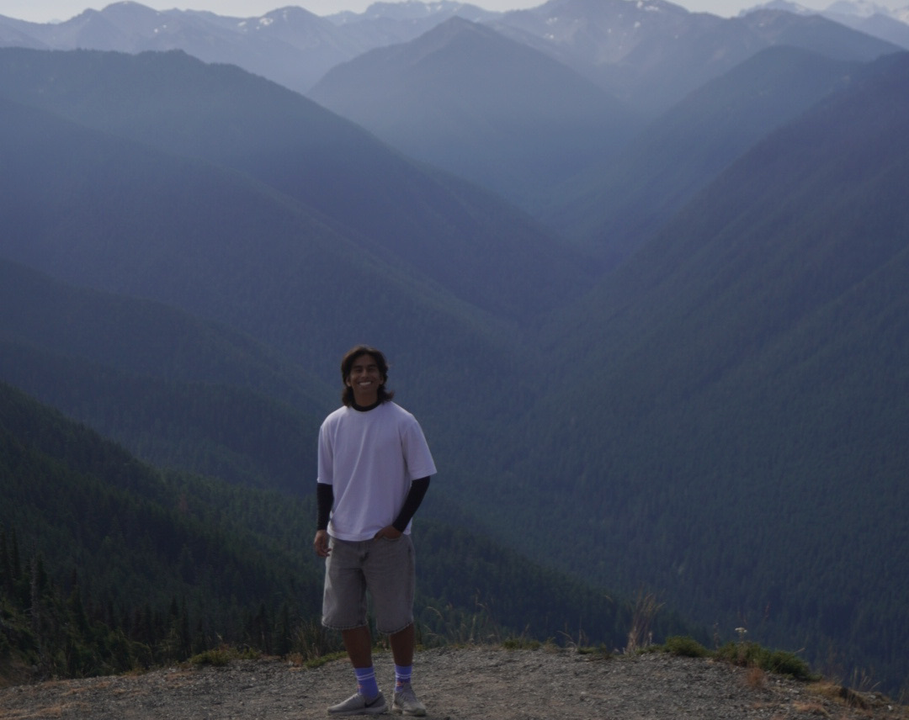
Hiking: Exploring Hurricane Ridge in Olympic National Park.
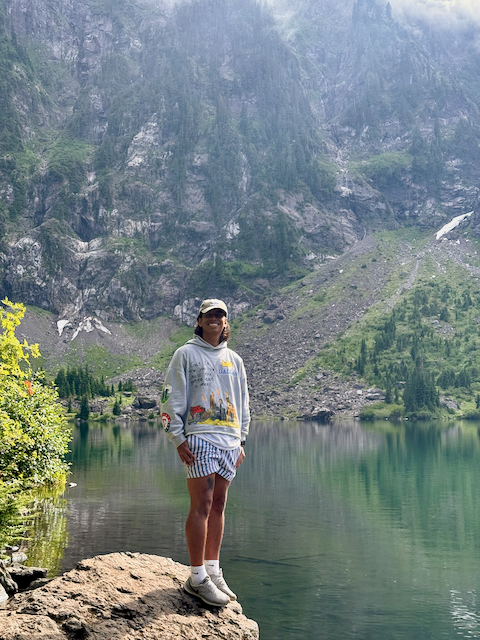
Hiking: Captivated by the scenic view of Lake Twenty Two.
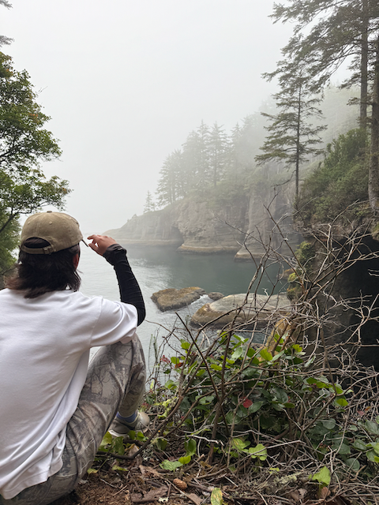
Hiking: Enjoying peaceful moments surrounded by the northernmost point of the contiguous U.S.
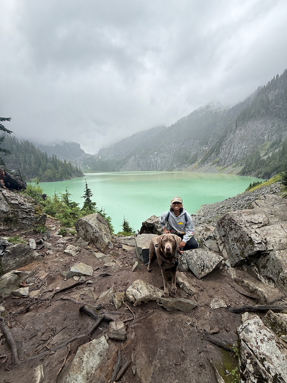
Hiking: Streneous journey at Blanca Lake with man's best friend.
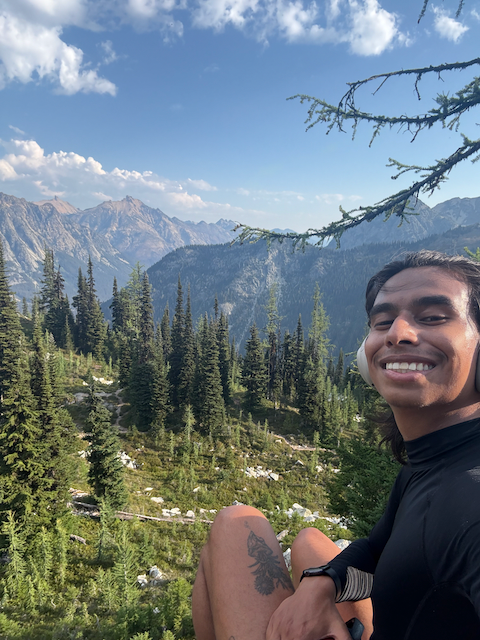
Hiking: Solo adventure at Maple Pass Loop with my hiking PR of 2:30h to complete 6.5mi.
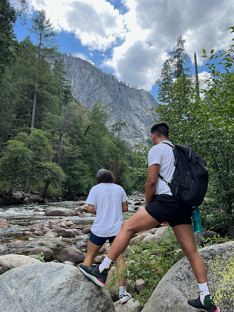
Hiking: Experiencing my first National Park: Yosemite National Park!
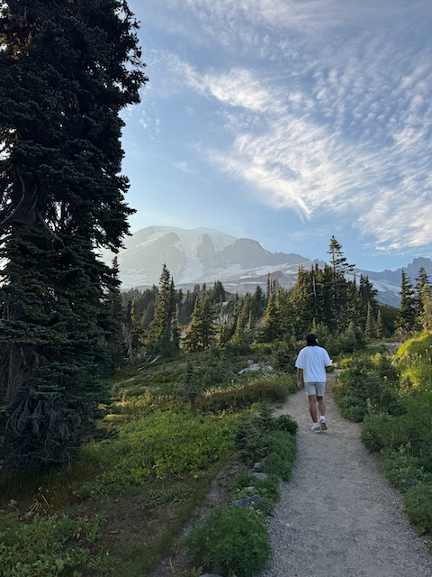
Hiking: Late meeting with Washington's most famous peak: Mount Rainier!.
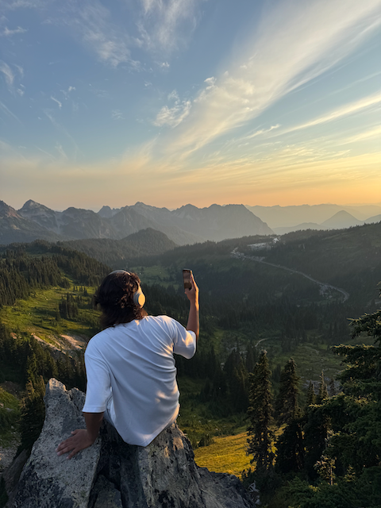
Hiking: Side-tracked to appreciate the beauty at Mount Rainier's National Park.
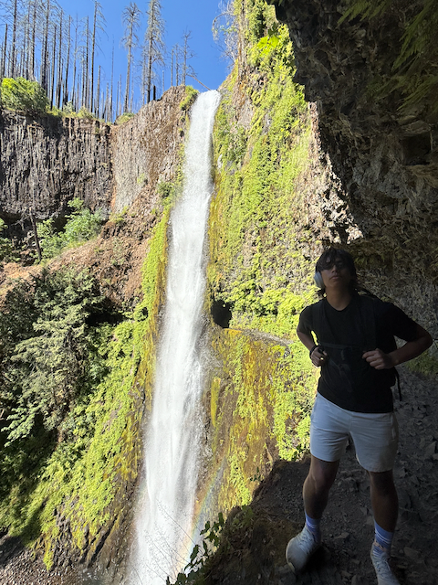
Hiking: Appreciating the beauty behind a waterfall at Tunnel Falls (My longest hike at 13mi).
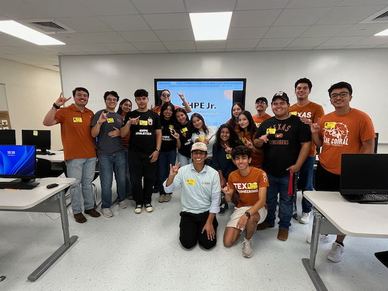
Volunteering: Showing highschool students that college is an option regardless of your backgroung through Texas SHPE Jr.
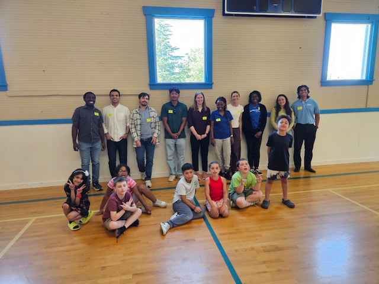
Volunteering: Promoting the STEM mindset to kids with Boeing!

Volunteering: Giving back to the community through service and education.
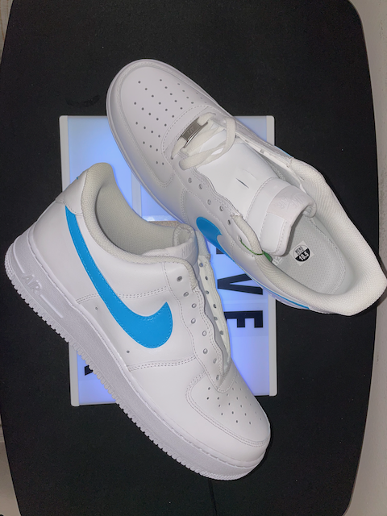
Custom Shoes: Designed and hand-painted footwear inspired by creativity and engineering precision.
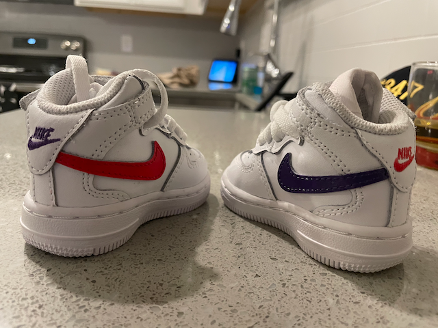
Custom Shoes: Mixing art and engineering in everyday design.
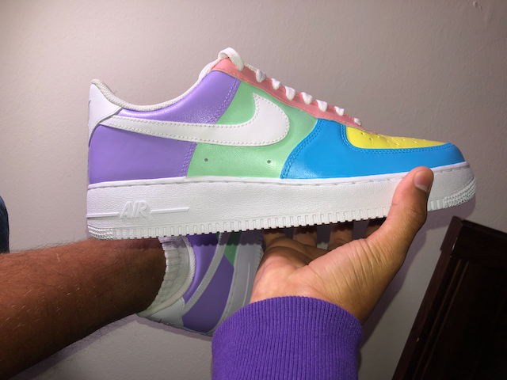
Custom Shoes: Expressing individuality through art and craftsmanship.
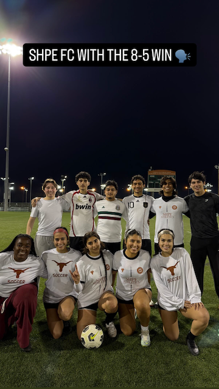
SHPE Soccer: Competing with fellow engineers in intramural matches: teamwork on and off the field.
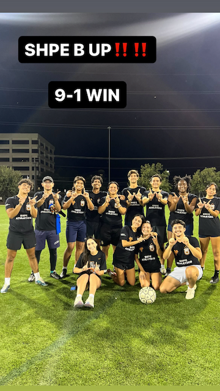
SHPE Soccer: Staying active while building friendships through SHPE athletics.
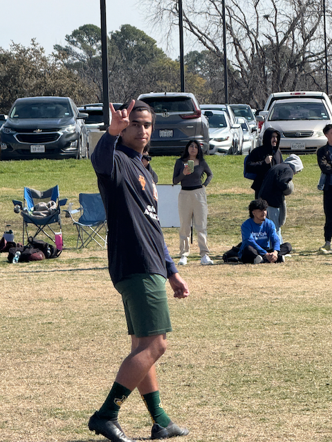
SHPE Soccer: Representing UT SHPE at SHPE Region's 5 Soccer Showdown: Lonestar!
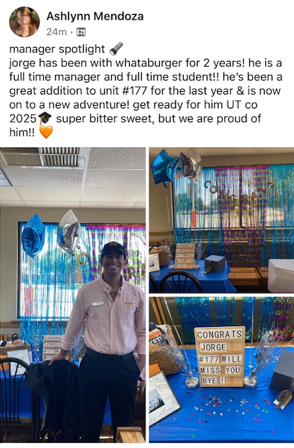
Whataburger: Nothing better than being recognized for your hard work :)
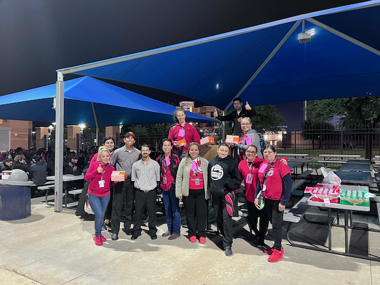
Whataburger: Because everyone needs late-night fuel... Especially hard-working band teams!
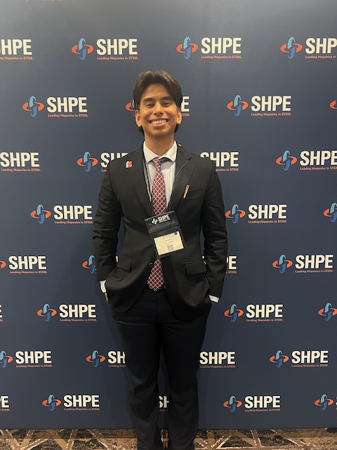
SHPE Regional Convention: Connecting with SHPE leaders and professionals from across the region 5.
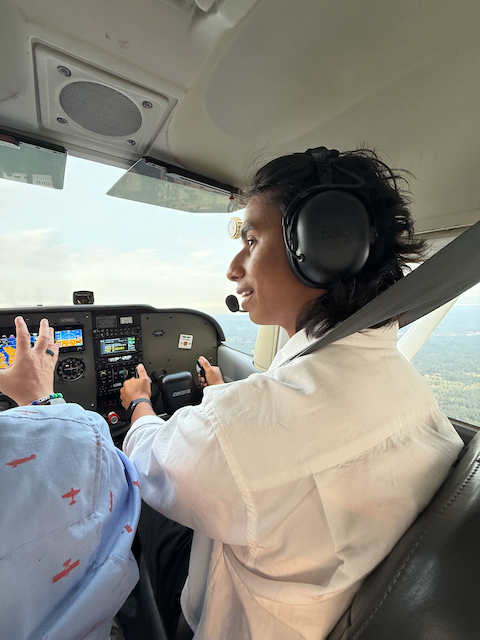
Flying an Airplane! Taking the controls during Boeing's Fly-out!
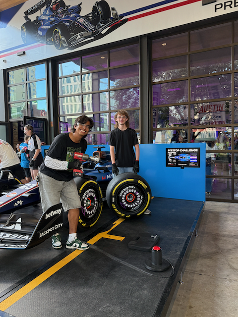
Formula 1 Pit Stop Challenge: Participating in a live pit-stop simulation in William's Racing F1 Weekend in Austin!.
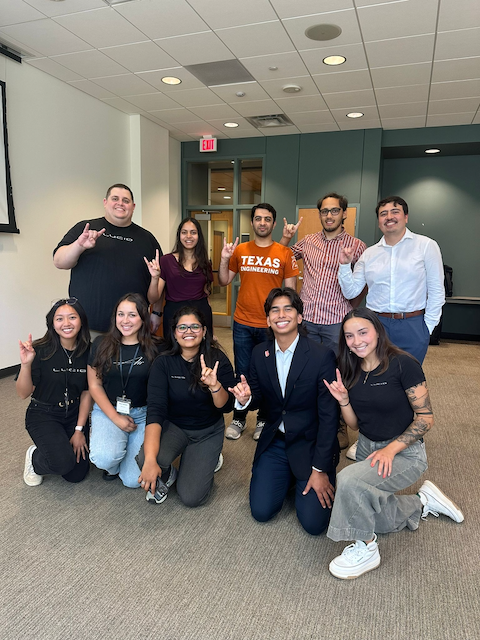
LUCID @ Longhorn Energy: Helping students connect with Lucid Motors through Longhorn Energy.
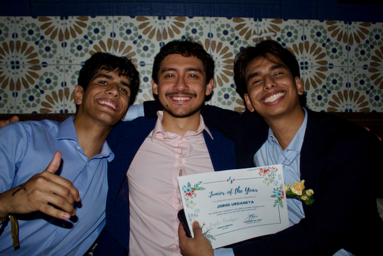
SHPE Junior of the Year: Recognized for academic excellence and leadership within SHPE in my first year at UT!
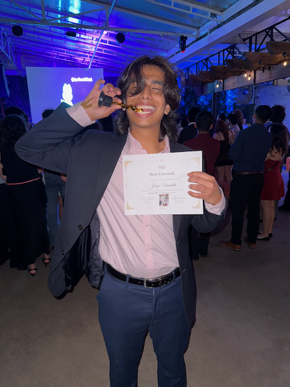
SHPE Best Dressed: Honored for going beyond professionalism and excellence with my passion for fashion.
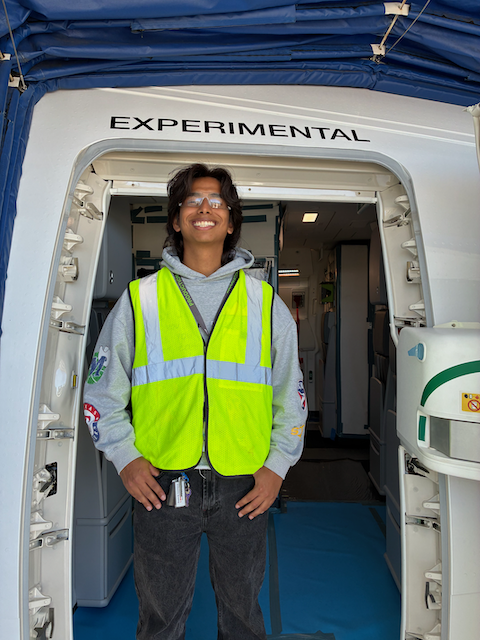
Boeing Flight Test: Inside a testing aircraft at Boeing, exploring advanced flight instrumentation systems.
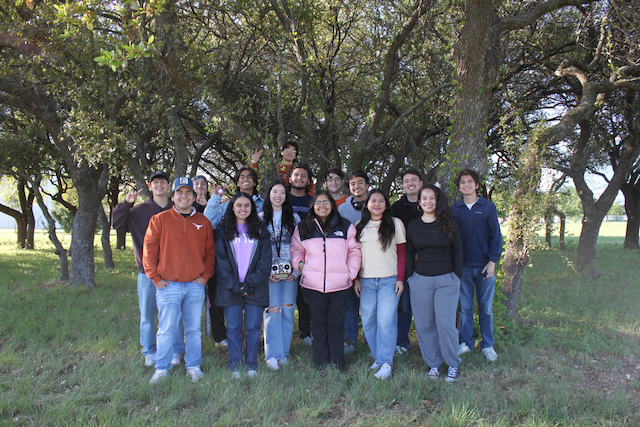
ASCEND Research: Hands-on work integrating avionics and sensor systems for the ASCEND project.
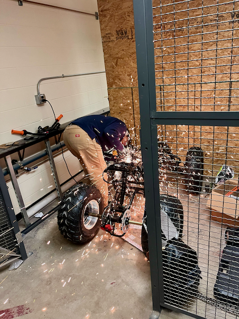
ASCEND Team: Collaborating with the full ASCEND engineering team on autonomous vehicle testing.
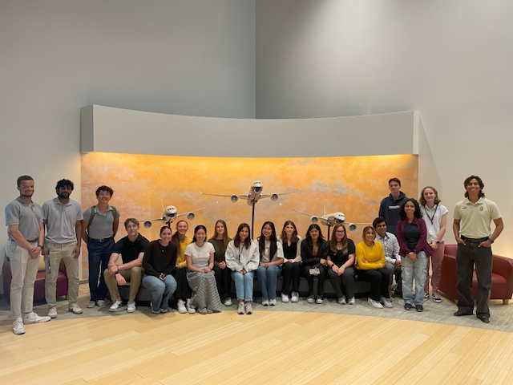
Boeing Integration Center: Visiting the Airplane Integration Center to observe real-time assembly and system testing.